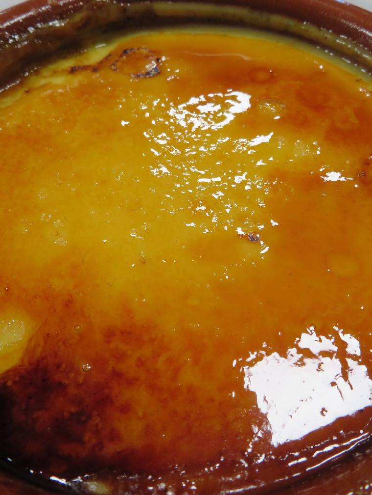

Desserts

Desserts
Crema catalana
Crème catalane
Préparation : 15 min
Repos : 3 h
Cuisson : 15 min
Ingrédients (pour 4 personnes)
- 1 l de lait
- 8 jaunes d’œufs
- 200 g de sucre
- 45 g d’amidon de maïs
- 10 g de sucre pour caraméliser
- ½ citron (le zeste)
- 1 pincée de sel
Quantités adaptées. Les temps de cuisson ne sont pas recalculés.
- Mixer jaunes, sucre, amidon, zeste, sel et lait.
- Chauffer doucement en remuant sans arrêt, jusqu’au premier bouillon et à épaississement.
- Répartir en cassolettes, refroidir puis réfrigérer 3 heures.
- Saupoudrer de sucre et caraméliser au fer ou au chalumeau.
D’après Spain.info, office espagnol du tourisme. Traduit et reformulé, repos et point de cuisson précisés.